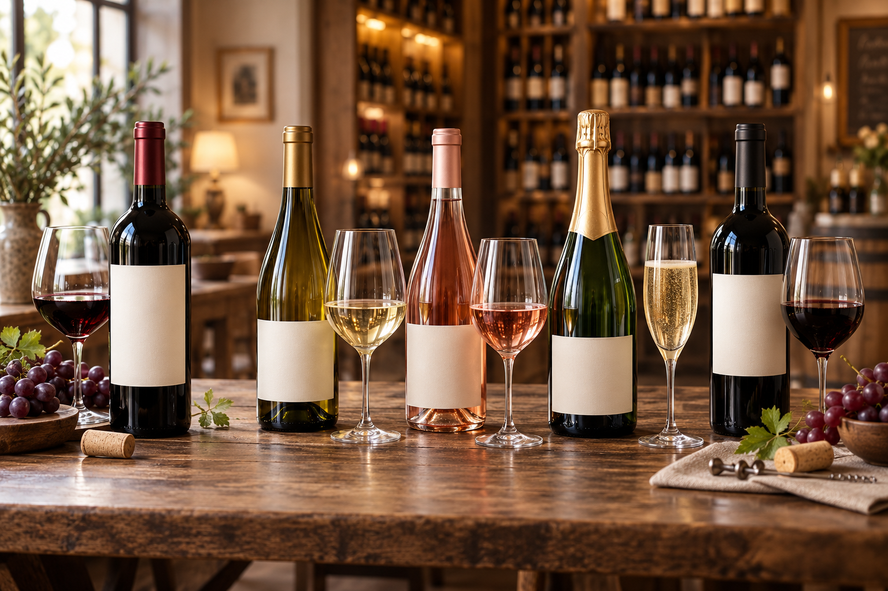

Vinhos tintos
Opções encorpadas ou leves, indicadas para carnes, massas, queijos e diferentes ocasiões.
Tradição, conhecimento e bons vinhos.
A Vinharia Agnello oferece rótulos nacionais e internacionais selecionados para diferentes paladares, refeições e ocasiões.
Nossa equipe está preparada para ajudar clientes iniciantes e conhecedores a encontrar uma opção adequada.

Opções encorpadas ou leves, indicadas para carnes, massas, queijos e diferentes ocasiões.
Vinhos leves e refrescantes, que podem acompanhar peixes, frutos do mar, aves e pratos suaves.
Opções frescas e versáteis para aperitivos, saladas, pratos leves e momentos descontraídos.
Bebidas indicadas para celebrações, entradas, sobremesas e ocasiões especiais.
Conheça alguns exemplos de produtos disponíveis em nossa seleção.
| Vinho | Tipo | Uva | Origem | Preço |
|---|---|---|---|---|
| Reserva Andina | Tinto seco | Cabernet Sauvignon | Chile | R$ 89,90 |
| Vale Dourado | Tinto seco | Merlot | Brasil | R$ 79,90 |
| Brisa de Mendoza | Branco seco | Chardonnay | Argentina | R$ 74,90 |
| Jardim de Provence | Rosé seco | Grenache | França | R$ 109,90 |
| Serra Imperial | Espumante brut | Chardonnay e Pinot Noir | Brasil | R$ 69,90 |
Os produtos e preços apresentados são fictícios e foram criados exclusivamente para este projeto acadêmico.
Conte para nossa equipe qual será a ocasião, qual prato será servido e quais sabores você prefere. Assim, poderemos indicar uma opção adequada ao seu perfil.